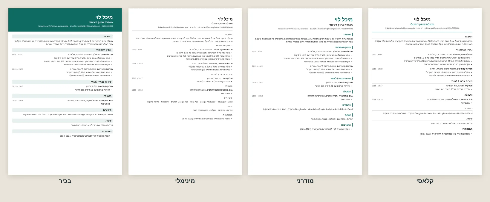
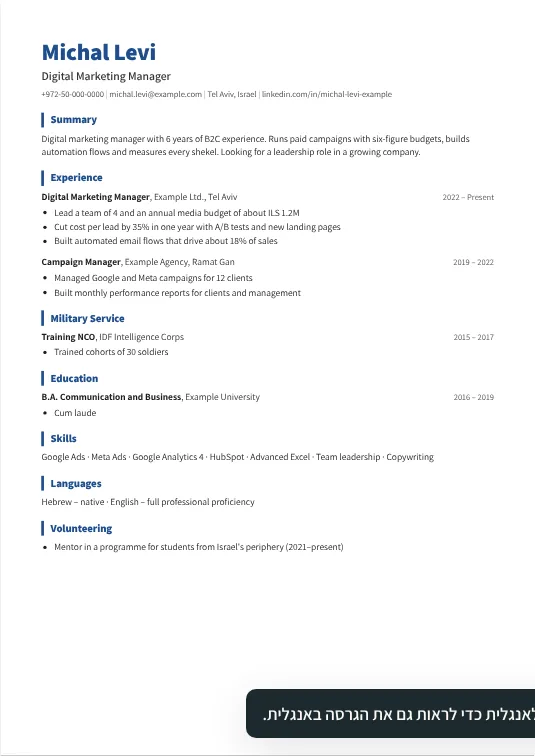
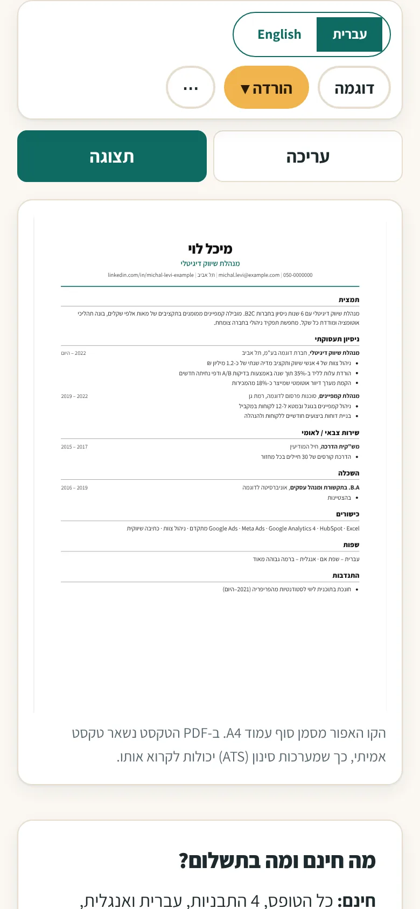

קורות חיים בעברית ובאנגלית: ממלאים, רואים, מורידים
ממלאים טופס פשוט ורואים את קורות החיים נבנים בזמן אמת, בעמוד A4 אמיתי. 4 תבניות נקיות, עברית מימין לשמאל ואנגלית משמאל לימין, בלי הרשמה.
פתחו את הכלי – חינםמה חינם ומה בתשלום?
- PDF בעברית שיוצא נכון: מימין לשמאל, בלי סימני פיסוק הפוכים
- 4 תבניות נקיות
- עברית + אנגלית
- מתאים למערכות סינון (ATS)
אפשר לשלם גם מתוך הכלי, כשקורות החיים מוכנים. אחרי התשלום ההורדה הנקייה נפתחת מיד.
ככה זה נראה
צילומי מסך מהכלי עצמו, עם נתוני דוגמה בדויים.




מה אפשר לעשות
תצוגה חיה בעמוד A4
כל שינוי בטופס מופיע מיד בעמוד, כולל קו שמראה איפה נגמר העמוד הראשון.
4 תבניות נקיות
קלאסי, מודרני, מינימלי ובכיר, עם 5 צבעי הדגשה. כולן בטור אחד וכותרות רגילות: מה שמערכות סינון קוראות הכי טוב.
עברית ואנגלית
שתי גרסאות נפרדות של אותם קורות חיים. אפשר להעתיק את העברית כבסיס ולתרגם שדה-שדה.
מבנה ישראלי
מדור שירות צבאי / לאומי, תמצית מקצועית, שפות ומדורים חופשיים (התנדבות, קורסים, פרסומים).
פרטיות
מה שאתם כותבים נשמר רק בדפדפן שלכם. לא נשלח אלינו ולא לאף אחד.
PDF ו-Word
PDF עם טקסט אמיתי (לא תמונה), וקובץ Word למשרות שמבקשות DOCX או למי שרוצה להמשיך לערוך.
חינם מול גרסה מלאה
| מה | חינם | גרסה מלאה |
|---|---|---|
| טופס מלא ו-4 תבניות | ✓ | ✓ |
| עברית + אנגלית | ✓ | ✓ |
| תצוגה חיה וגיבוי | ✓ | ✓ |
| עם סימן מים | נקי | |
| קובץ Word (DOCX) | — | ✓ |
| מחיר | ₪0 | ₪19 חד-פעמי |
כנות: הכלי רץ כולו בדפדפן, ולכן הנעילה פשוטה ולא "מוגנת". גרסת ה-PDF החינמית כוללת סימן מים, שגם נקרא כטקסט על ידי מערכות סינון – לשליחה למשרות כדאי PDF נקי.
איך זה עובד
ממלאים
פרטים, תמצית, ניסיון, צבא, השכלה וכישורים. אפשר להתחיל מדוגמה.
בוחרים עיצוב ושפה
4 תבניות, 5 צבעים, ועברית או אנגלית בלחיצה.
מורידים
PDF עם סימן מים בחינם, או PDF נקי + Word בגרסה המלאה.
שאלות נפוצות
למה לא פשוט Word או ממיר PDF חינמי?
בעברית הרבה כלים מייצרים PDF עם מספרים, תאריכים וסוגריים במקום הלא נכון, או טקסט שנשמר כתמונה. כאן העמוד נבנה מראש מימין לשמאל, תאריכים ומילים באנגלית (Excel, B.A.) מסודרים נכון, וה-PDF שומר על טקסט אמיתי שאפשר לסמן ולחפש.
קורות החיים יעברו מערכות סינון (ATS)?
התבניות בנויות כדי לעזור לזה: טור אחד, כותרות רגילות (ניסיון תעסוקתי, השכלה…), טקסט אמיתי ולא תמונה, בלי טבלאות ובלי תיבות טקסט. אף אחד לא יכול להבטיח מעבר סינון: הכי חשוב שהתוכן יכלול את המילים מתוך מודעת המשרה.
איך יוצא ה-PDF?
לוחצים "הורדה" ובוחרים PDF: נפתח חלון ההדפסה של הדפדפן, ושם בוחרים "שמירה כ-PDF". כך הטקסט נשאר טקסט אמיתי וחד. בטלפון זה עובד דרך תפריט השיתוף / ההדפסה.
אפשר להוסיף תמונה?
לא, ובכוונה: רוב המגייסים בישראל לא מצפים לתמונה, ומערכות סינון לא קוראות אותה. אותו דבר לגבי תעודת זהות, מצב משפחתי וכתובת מלאה.
איך כותבים שירות צבאי?
יש מדור נפרד. כתבו תפקיד ויחידה במילים שאדם מבחוץ מבין, ומה עשיתם במספרים. יש על זה פרק במדריך לכתיבת קורות חיים.
איפה נשמר מה שכתבתי?
רק בדפדפן במכשיר שלכם. כדי לעבור מחשב, השתמשו ב"שמירת גיבוי" בתפריט ⋯ ואז "שחזור מגיבוי" במחשב השני.
מה קורה אחרי התשלום?
ה-PDF הנקי וה-Word נפתחים מיד בדפדפן שבו שילמתם, לכל הגרסאות שתייצאו בו. מקבלים גם קישור לדף אישור: פתיחה שלו בדפדפן אחר פותחת שם את הגרסה המלאה.
אפשר לקבל החזר?
זה מוצר דיגיטלי שנפתח מיד, ולכן כדאי לנסות את הכלי בחינם לפני הרכישה. פרטים במדיניות הביטולים. אם משהו לא עובד – כתבו לנו ונתקן.
מדריכים
- איך כותבים קורות חיים בעברית: מבנה, דוגמאות וטעויות נפוצות
- קורות חיים באנגלית לישראלים + איך לעבור מערכות ATS
עובדים כעצמאים?
ערכת תבניות הצעת מחיר ומעקב עוסק פטור לצד הפרילנס.